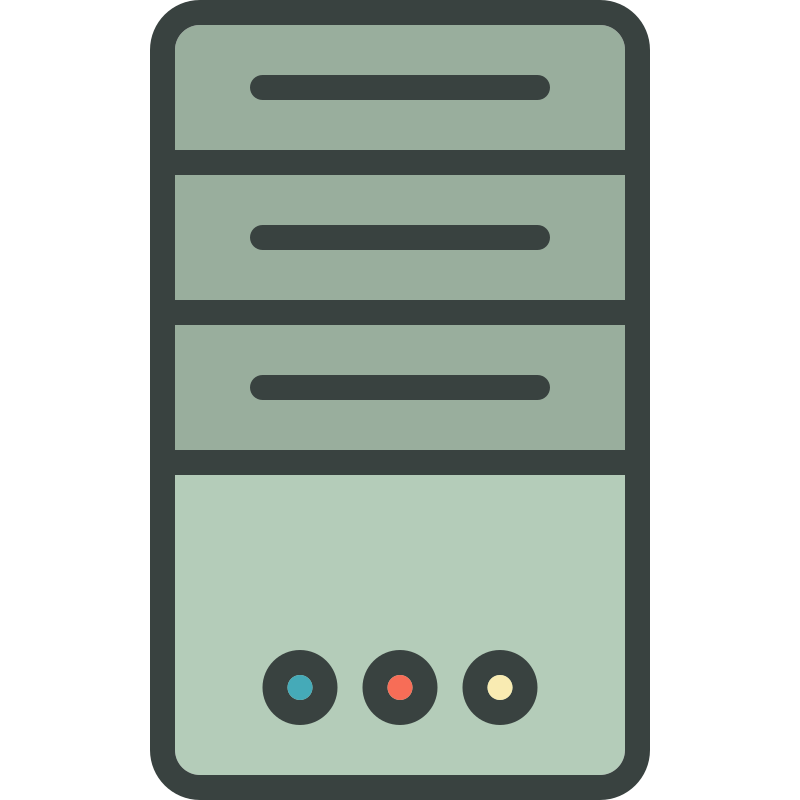

Dataschool · Web APIs
API in a Nutshell
A presentation made to clarify exactly what APIs are, understand their uses, get the gist of designing them, and highlight why you, too, must know about them.
← → to navigate · S sidebar · F fullscreen
Motivation of this dataschool
Noa Boimond · Data Engineer
- A liking toward computer as a whole
- To help other avoid the struggle I faced
Introduction
- 1 Introduction Topic presentation, its purpose, and its prerequisites
- 2 API Basics the core Anatomy of a request and response, then the styles that reshape them
- 3 API Advanced The contract's clauses, then who you are and what you may do
- 4 API at Scale Caching, compression, and the gateway as one front door
- 5 Where to go next API vs URL vs SDK vs MCP, and one closing provocation
API, Kesako?
-
Application Programming Interface (API): a connection between computers or computer programs.
→Metal conducts electricity, but only a cable does it safely and consistently — an API is that same framework, connecting two programs the way a cable connects two outlets.
-
Why?
↗ Borrow data↘

Borrow logic - Google Maps
API Basics
- 1 Introduction Topic presentation, its purpose, and its prerequisites
- 2 API Basics the core Anatomy of a request and response, then the styles that reshape them
- 3 API Advanced The contract's clauses, then who you are and what you may do
- 4 API at Scale Caching, compression, and the gateway as one front door
- 5 Where to go next API vs URL vs SDK vs MCP, and one closing provocation
API Advanced
- 1 Introduction Topic presentation, its purpose, and its prerequisites
- 2 API Basics the core Anatomy of a request and response, then the styles that reshape them
- 3 API Advanced The contract's clauses, then who you are and what you may do
- 4 API at Scale Caching, compression, and the gateway as one front door
- 5 Where to go next API vs URL vs SDK vs MCP, and one closing provocation
API at Scale
- 1 Introduction Topic presentation, its purpose, and its prerequisites
- 2 API Basics the core Anatomy of a request and response, then the styles that reshape them
- 3 API Advanced The contract's clauses, then who you are and what you may do
- 4 API at Scale Caching, compression, and the gateway as one front door
- 5 Where to go next API vs URL vs SDK vs MCP, and one closing provocation
Where to go next
- 1 Introduction Topic presentation, its purpose, and its prerequisites
- 2 API Basics the core Anatomy of a request and response, then the styles that reshape them
- 3 API Advanced The contract's clauses, then who you are and what you may do
- 4 API at Scale Caching, compression, and the gateway as one front door
- 5 Where to go next API vs URL vs SDK vs MCP, and one closing provocation
Part I · Foundations
Cold open
- Live call, no context — a URL in the browser, raw JSON on screen, not a word of explanation
- Ask the room — who has seen this before, who can tell me what it means
- The promise — "in an hour, every character on this screen will be boring to you"
- Then the background slide — who I am, why this dataschool
Part I · Foundations
Kesako & why care
- Raw definition — Application Programming Interface: a connection between programs. One line, move on
- The cable metaphore — metal conducts electricity; a cable does it safely, consistently, repeatably
- The restaurant-app story — the two reasons to call an API: borrow data, borrow logic
- JSON in 90 seconds — one object, one array, one nested value
- Where a web API lives — your machine → HTTP → their machine. No OSI layers
Part I · Anatomy
Anatomy of a call the core
- Two columns — request on the left, response on the right, one component lit at a time
- The request — method, endpoint, parameters, headers
- The response — status, headers, body
- Three buckets — 2xx worked, 4xx is your fault, 5xx is theirs
- Hands-on, 4 min — everyone makes one call, their own way: browser, Postman, curl, Excel
Part I · Anatomy
Styles
- REST — resources as URLs, HTTP verbs as actions. 95% of what you will ever meet
- GraphQL — one endpoint, and the client asks for the exact fields it wants
- gRPC — binary instead of JSON, machine to machine, fast and unreadable
- SOAP — one sentence, said with pity, so you recognise it in legacy docs
- The takeaway — different cables, same electricity
Part II · The contract
The contract's clauses
- Rate limiting — the API's speed limit. Taught once, here, in full
- Pagination — you don't get 10 000 rows, you get page 1 of 200
- Versioning —
/v1/vs/v2/, and why last year's integration still works - Idempotency — calling twice must not charge twice
Part II · The contract
Who are you, and what may you do
- The two questions — authentication is who are you; authorization is what may you do
- 401 vs 403 — those two questions, made visible in status codes
- API key — a password in a header, plus the golden rules for not leaking it
- JWT — a signed badge that carries its own claims
- OAuth — "Sign in with Google", in four arrows
- RBAC vs ABAC — who you are, versus what is true right now
Part II · Horizon
When it has to scale
- The consumer's view — not an infra tour: what do these limits mean for my integration?
- Caching — don't ask twice for the same unchanged answer
- Compression — same data, fewer bytes on the wire
- API gateway — one front door, doing most of §4 and §5 for you
Part II · Horizon
Where to go next
- API vs URL — a URL is an address; an API is the contract at that address
- API vs SDK — the SDK is the API wrapped in your language, so you stop writing HTTP by hand
- API vs MCP — an API is for your code; MCP is for an LLM to discover and call tools on its own
- HATEOAS, as an aside — the response tells you what you can do next
- The closer — the web is RESTful; most "REST APIs" aren't